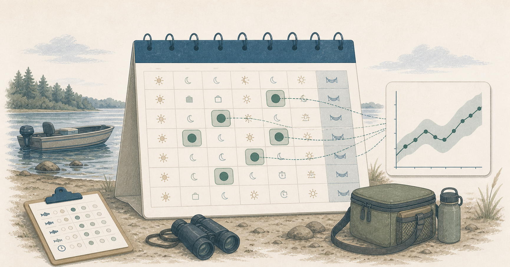

Why the sampling calendar belongs in the estimate
Available days, sampled days, and the population behind a creel result

The design-object post introduced the idea that a creel analysis starts before an estimator is called. This post focuses on one part of that design: the sampling calendar. A calendar does not merely tell a clerk where to be on Tuesday. It defines the set of days that a reported result can represent.
In brief
- The calendar distinguishes the days available for sampling from the days that were selected.
- Strata such as weekday and weekend belong in the calendar because fishing pressure can differ between them.
- Retaining the full calendar provides the information needed to expand observations from sampled days to the full survey period.
What is a sampling calendar in a creel survey?
A sampling calendar records the dates in the survey period, the strata used to organize them, and the dates selected for fieldwork. That is more useful than thinking of the calendar as a list of work assignments. It distinguishes the period we want to estimate from the smaller set of days on which observations were collected.
Suppose a survey covers June through August. Every day in that season belongs to the period we want to estimate, but field staff cannot sample all of them. The calendar may separate weekdays from weekends because anglers use the fishery differently on those days. It may also identify holidays, special events, or periods of unusual access.
The sampled days provide the observations. The full calendar defines the population of days those observations are used to estimate. If that information is lost, a mean count or interview rate can still be calculated, but there is no longer enough information to expand the sampled days to the full season.
Why available days and sampled days are different
An available day belongs to the population of days the survey could have sampled. A sampled day is one the survey actually selected and worked. Those are related pieces of information, but they have different roles in the analysis.
For example, a survey might make every summer day available, classify each as a weekday or weekend, and then sample a larger proportion of weekends. That is not a problem. It may be a deliberate design choice when weekend fishing pressure is expected to be higher or more variable. The estimator needs to know both how many days were sampled and how many days are in each stratum so the sampled observations can be expanded correctly.
This is the practical reason to retain unsampled dates in the survey record, even when they have no count or interview row. They provide information about the population of days and the sampling design. A missing count record might mean “not selected,” “selected but no data were collected,” or “data have not been entered.” Those situations cannot be treated as equivalent.
Accounting for strata in the expansion
Strata are groups of days that the sampling design treats separately. Weekday and weekend are common examples, but a survey might also use month, season phase, holiday period, section, or combinations of these when the field protocol supports them.
The important question is not whether a column can be used as a grouping variable. It is whether those groups were part of the sampling design and have a clear role in defining the population. If a field season deliberately samples weekend days more often, that decision needs to be included in the calendar and in the later expansion, not only in a scheduler’s spreadsheet.
If fishing pressure differs among strata, the season-wide estimate needs to account for how many days each stratum contributes to the season. A weekend stratum with 26 available days and a weekday stratum with 66 available days represent different portions of the season, regardless of how many days were sampled from each. The calendar provides those population counts for the expansion.
Building a calendar with tidycreel
tidycreel can generate a reproducible stratified schedule with generate_schedule(). The example below defines the full season, samples weekday and weekend strata at different rates, and retains all dates with a sampled column identifying those selected for fieldwork.
library(tidycreel)
schedule <- generate_schedule(
start_date = "2024-06-01",
end_date = "2024-08-31",
n_periods = 2,
sampling_rate = c(weekday = 0.30, weekend = 0.60),
include_all = TRUE,
expand_periods = FALSE,
seed = 42
)
# The full schedule has date, day_type, and sampled columns.
scheduleThe example is deliberately simple. It does not specify what proportion of weekdays or weekends another survey should sample. That decision depends on the fishery, staffing, budget, survey objectives, and expected variability. The important part here is that the sampling rates and selection are explicit and reproducible rather than stored only in a spreadsheet or calendar export.
When it is time to analyze the observations, the selected dates become part of the design alongside the field tables:
sampled_schedule <- schedule[schedule$sampled, ]
design <- creel_design(
sampled_schedule,
date = date,
strata = day_type
)The tidycreel reference site documents the scheduling and design arguments in detail. For a fuller explanation of the logic, the companion book’s chapter on sampling calendars and strata is the better place to start.
What to check before the field season starts
Before a schedule becomes a field assignment, I would ask a few questions:
- What dates belong to the period I want to estimate?
- Which differences among days are important enough to define strata?
- How many days are available in each stratum, and how many will be sampled?
- What will a missing record mean after the season: not selected, missed, incomplete, or absent from the data system?
- Can another analyst reconstruct the selection rule without asking the person who made the schedule?
These questions determine the population that can be estimated from the survey. If the intended result is a summer-season estimate, for example, the design needs to identify the days in that season and how the sampled days were selected from them.
Retaining the calendar for analysis
By the end of a field season, schedules often live in several places: a shared spreadsheet, email assignments, a database export, and a field notebook. The analysis should preserve a clean version of the original calendar rather than rebuilding it from the dates that happen to have observations.
That is the same principle behind the design object: the field design and its data belong together. It is also related to the recent tidycreel development update, where the focus was keeping downstream estimators and reporting consistent with the survey design.
The next step is to attach counts and interviews to the design and use that information to estimate angler effort across the defined survey period. Before that, the roving-interviews post shows why the way an interview enters the design determines which estimator is appropriate.